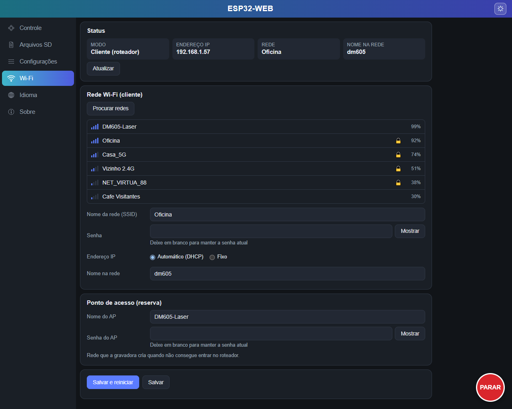
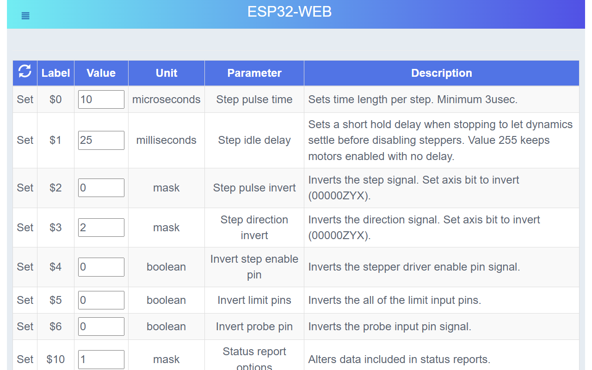
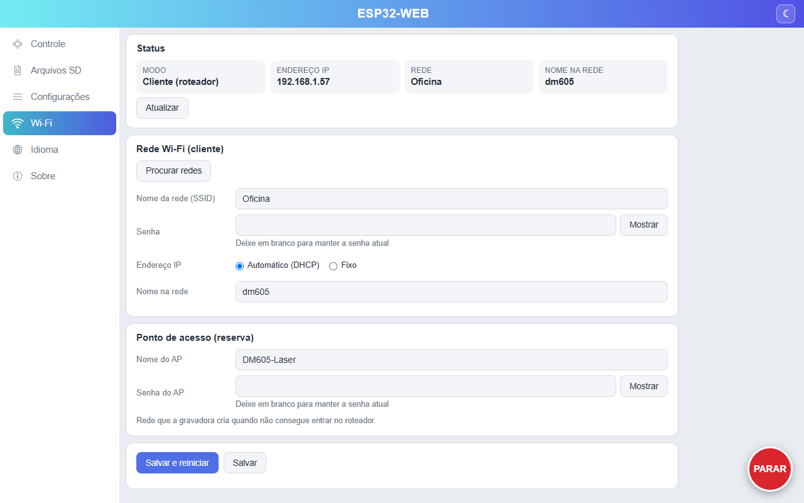
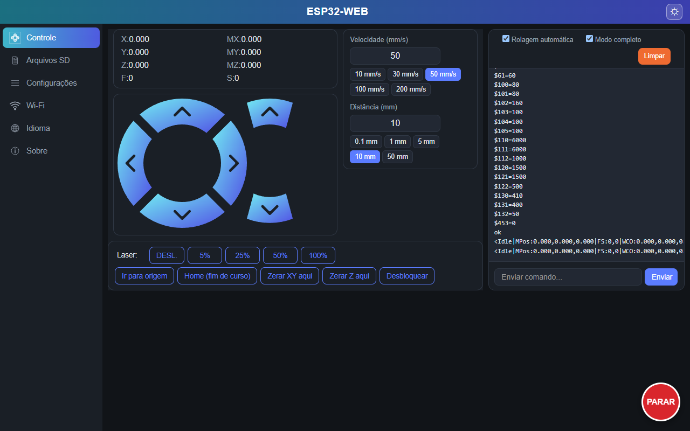
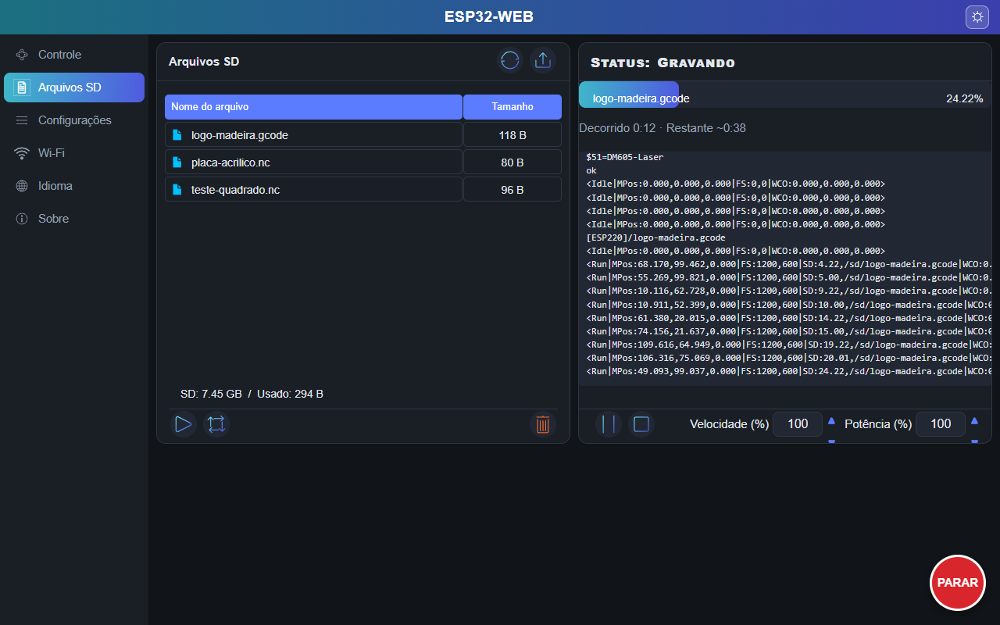
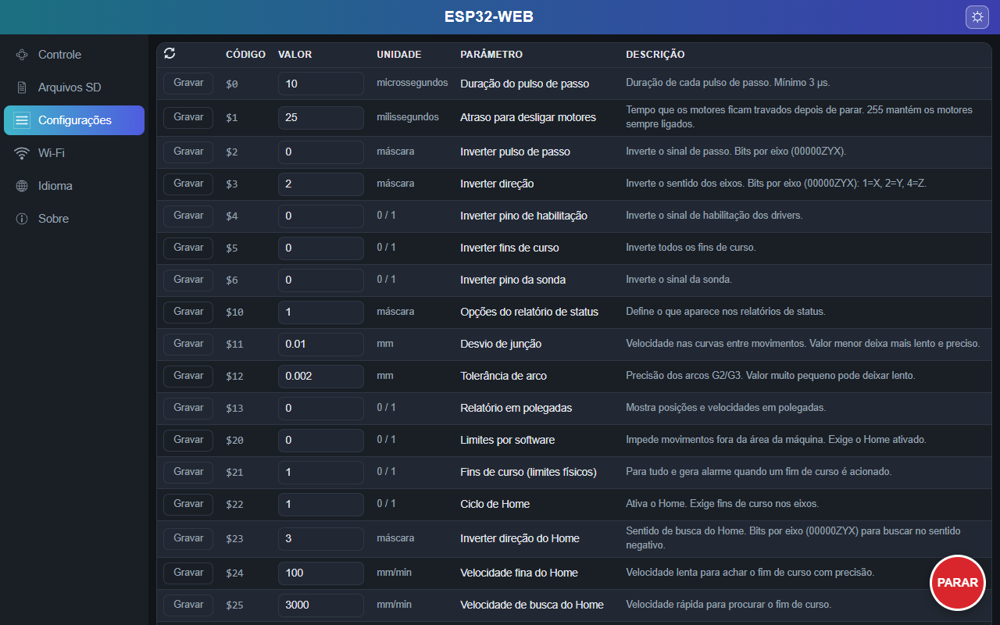
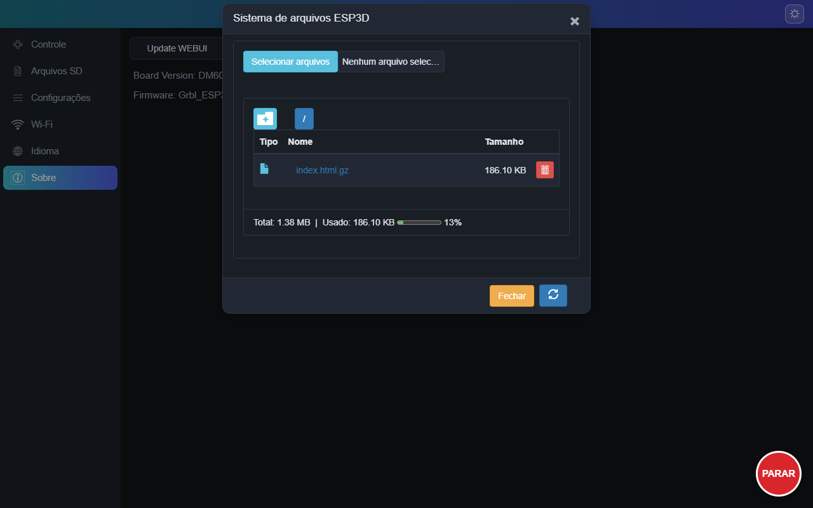

Configure o Wi-Fi da DM605 sem procurar parâmetros
Uma nova interface web para a sua gravadora: escolha a rede, digite a senha e pronto. Tudo em português, com botão de parada sempre à mão e cronômetro do trabalho.

Antes e depois
Na interface de fábrica, para colocar o laser na sua rede era preciso achar os parâmetros certos no meio de uma lista em inglês e editar um por um. Agora existe uma tela só para isso.


O que mais mudou
A placa continua com o mesmo firmware: só a página web é trocada. Suas configurações da máquina não mudam.
Wi-Fi em uma tela
Status da conexão, busca de redes com sinal e cadeado, IP fixo ou automático, nome na rede e rede própria do laser.
Tudo em português
Menus, configurações e até as mensagens de erro do GRBL explicadas em português.
Botão PARAR
Sempre visível no canto da tela. Para o laser e o movimento na hora.
Cronômetro
Tempo decorrido e estimativa do restante durante a gravação, com aviso e bipe ao terminar.
Enquadramento corrigido
O contorno usa só a área do desenho, sem incluir a origem à força.
Atalhos de movimento
Velocidade (10 a 200 mm/s) e distância (0,1 a 50 mm) em um clique.
Configurações certas
Nomes corretos dos parâmetros do fabricante, como air assist, sensor de chama e eixo Y do rotativo, cada um com seu botão Gravar.
Tema escuro e claro
Visual compacto e moderno, com o tema escolhido salvo no navegador.




Como instalar
Leva poucos minutos e não precisa instalar nada no computador. Funciona no Windows, Linux, Mac ou celular.
Baixe o arquivo
index.html.gz. Não descompacte: ele vai assim mesmo para a placa.
Conecte na rede do laser
Ligue a gravadora e conecte o computador na rede Wi-Fi que o próprio laser cria (modo AP). Depois abra o endereço do laser no navegador. No ESP3D costuma ser http://192.168.0.1.
Envie para a placa
Vá em About/Sobre → Update WEBUI, clique em Selecionar arquivos, escolha o index.html.gz e envie, substituindo o que já existe.
Recarregue e configure o Wi-Fi
Aperte Ctrl+F5. A nova interface abre em português. Use a aba Wi-Fi para colocar o laser na rede da sua casa ou oficina.
http://IP-DO-LASER/index.html.gz no navegador. Se algo der errado, é só enviar esse arquivo de volta.Pelo terminal (opcional)
Para quem usa Linux ou Git Bash e quer gerar, testar ou enviar com um comando. Precisa de Node.js, make e curl.
git clone https://github.com/marcosendler/laser-xuupuuf-DM605 cd laser-xuupuuf-DM605 make simular # testar sem o laser make enviar PLACA=192.168.0.1 # enviar para a placa
Mais detalhes no README do projeto.
Dúvidas comuns
Perco as configurações da minha máquina?
Não. Só a página web é trocada. Os parâmetros da gravadora (velocidades, área de trabalho, potência etc.) ficam na placa e não mudam.
Como volto para a interface original?
Envie de novo o index.html.gz que você guardou antes, do mesmo jeito. A interface de fábrica também está no projeto, em interface-original.
Configurei o Wi-Fi e não acho mais o laser. E agora?
Na rede nova, o laser recebe outro IP. Procure por ele na lista de aparelhos do roteador. Se ele não conseguir entrar na rede, normalmente volta a criar a própria rede (modo AP), e você pode conectar nela de novo.
Preciso trocar o firmware?
Não. A nova interface usa o mesmo firmware que já vem na DM605 (ESP3D / GRBL_ESP32).
Dá para testar antes de instalar?
Sim. Com o projeto baixado, make simular abre a interface com uma placa simulada no próprio computador, sem precisar do laser.